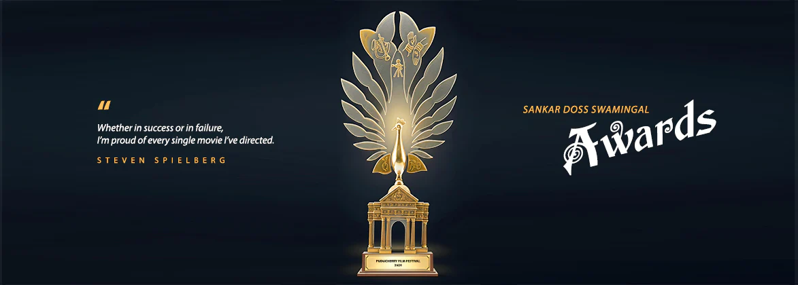

The Government of Puducherry instituted the Sankar Doss Swamingal Award for the best directed film in the three languages which are spoken in different areas of the Union Territory of Puducherry namely Tamil, Telugu and Malayalam. The Award carries a cash prize of ₹ 1,00,000 along with a memento for the Director of the film. This Award has been given every year to a talented director. The following films and directors have received the Award over the last four decades:
| YEAR | FILM TITLE | LANGUAGE | DIRECTOR |
|---|---|---|---|
| 1995 | Parinayam | MALAYALAM | Hariharan |
| 1996 | Indira | TAMIL | Suhasini |
| 1997 | Kannatikkuvvu | MALAYALAM | Sibi Malayil |
| 1998 | Kaliyattam | MALAYALAM | Jayaraj |
| 1999 | The Terrorist | TAMIL | Santosh Sivan |
| 2000 | Karunam | MALAYALAM | Jayaraj |
| 2001 | Bharathi | TAMIL | Dr. Gnana Rajasekaran, IAS |
| 2002 | Kadal Pookkal | TAMIL | Bharathiraja |
| 2003 | Kannathil Muthamittal | TAMIL | Mani Ratnam |
| 2004 | Oruthi | TAMIL | Amshan Kumar |
| 2005 | Akale | MALAYALAM | Shyamaprasad |
| 2005 | Ram | TAMIL | Ameer |
| 2007 | Thuvamai Thuvamirundhu | TAMIL | Cheran |
| 2008 | Periyar | TAMIL | Gnana Sekaran |
| 2009 | Kanchivaram | TAMIL | Priyadarshan |
| 2010 | Pasanga | TAMIL | Pandiraj |
| 2011 | Angadi Theru | TAMIL | Vasanthabalan |
| 2012 | Adaminte Makan Abu | MALAYALAM | Salim Ahamed |
| 2013 | Vagai Sooda Vaa | TAMIL | Sargunam |
| 2014 | Thanga Meengal | TAMIL | Ram |
| 2015 | Kutram Kadithal | TAMIL | Brahma |
| 2016 | Radio Petti | TAMIL | Hari Viswanath |
| 2017 | Induhi Suttru | TAMIL | Sudha Kongara |
| 2019 | Pariyerum Perumal (BABL) | TAMIL | Mari Selvaraj |
| 2020 | Oruthi Sreppuy Size-7 | TAMIL | R. Parthiban |
| 2021 | Thean | TAMIL | Ganesh Vinayakan |
| 2022 | Kurunga Pedal | TAMIL | Kamala Kannan |
| 2023 | Kaathal – The Core | MALAYALAM | Joo Baby |